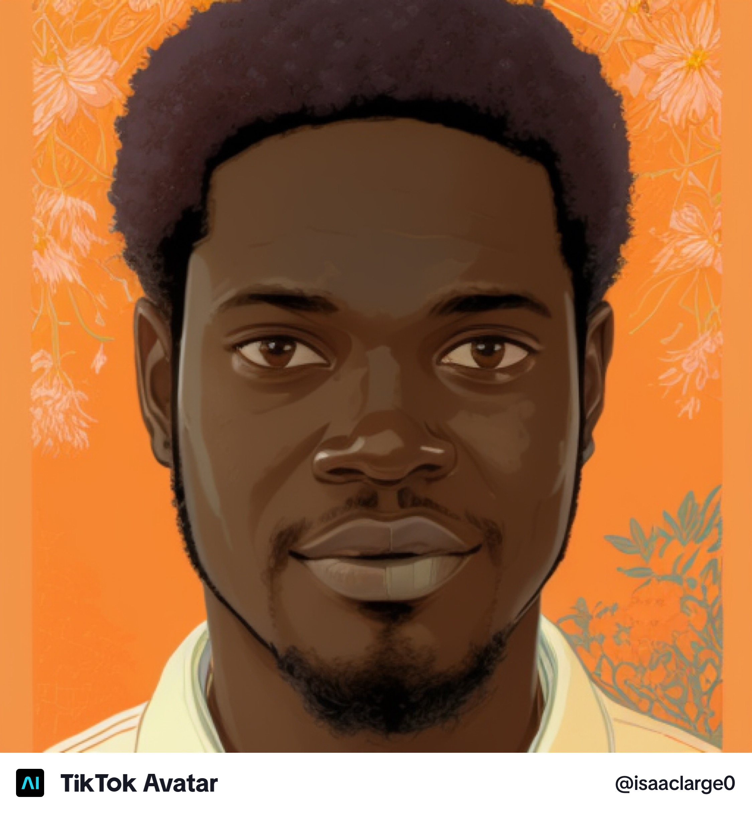

Welcome To ISAAC-LARGE Portfolio

hi, i'm ISAAC LARGE , A passionate web developer with a love for creating innovative an user-friendly websites. ispecialise in frontend development and have experience working with various technologies including html, css, javascript and react.
My portfolio showcases a range of projects that demonstrate my skills and creativity.from responsive web designs to interactive web applications, i strive to deliver high-quality solutions that meet the needs of clients and users alike.
ABOUT ME
Hello! I'm a dedicated and enthusiastic aspiring Web Developer with a strong passion for coding, problem-solving, and continuous learning. I recently began my web development journey and am committed to building the skills needed to create modern, user-friendly, and efficient web applications. I enjoy exploring new technologies, improving my technical abilities, and staying up to date with the latest trends in web development. Every day presents an opportunity to learn something new, and I approach each challenge with curiosity, determination, and a growth mindset. I hold both a National Diploma (ND) and a Higher National Diploma (HND) in Marketing from Federal Polytechnic Auchi. My background in marketing has helped me develop strong communication, analytical, and customer-focused skills, which I now combine with my growing expertise in technology. Currently, I am learning the PERN Stack (PostgreSQL, Express.js, React, and Node.js) along with TypeScript, as I work toward becoming a professional full-stack developer. I am excited about creating impactful digital solutions, collaborating with others, and contributing to innovative projects that make a difference. Thank you for visiting my portfolio. I look forward to connecting, learning, and growing in the world of software development.
MY TECHNICAL SKILLS
- HTML,CSS3, Javascript, Typescript
- React.js, Node.js, Express.js
- responsive Web Design
- Version Control
- UI/UX Design Principles


.png)


MY PROJECTS
- - Project 1: E-Commerce Website - A full-stack e-commerce solution built with React and Node.js
- - Project 2: Portfolio Website - A personal portfolio showcasing my skills, projects, and achievements
- - Project 3: Blogging Platform - A platform for users to create and share blog posts with commenting system.
Contact Me
if you would like to get in touch with me, please free to reach out to me via email at ISAACLARGE Mail you can also visit my YOUTUBE PAGE channel to see my latest videos and updates.
MY PRICES
my price for web development
| Service | Price | S/N |
|---|---|---|
| 1 | Website Design | $500 - $1000 |
| 2 | Website Development | $1000 - $3000 |
| 3 | E-Commerce Website | $2000 - $5000 |
| 4 | Website Maintenance | $50 - $200/month |